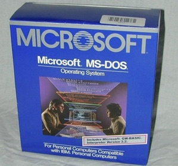
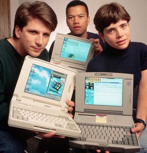
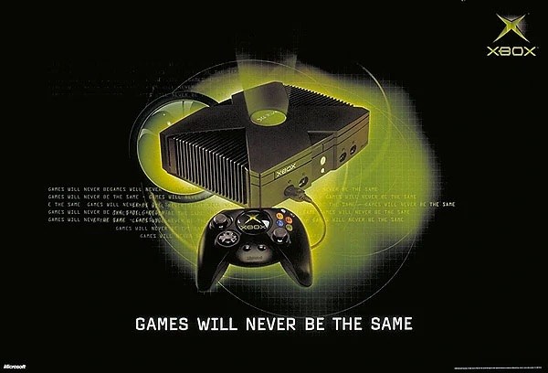
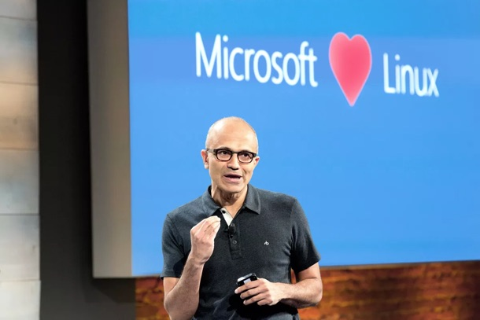
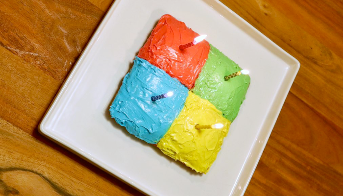

Microsoft turns 45
Saturday, April 4, 2020
On April 4th 1975, a small company called Microsoft was founded in Albuquerque, New Mexico. They would later become the most pivotal company in the technology world, and their co-founder Bill Gates would become the world’s most prolific philanthropist.

Like many tech companies, Microsoft has had a colourful past. Started by two whiz kids (Paul Allen and Bill Gates), they started by selling operating system and supporting software. Xenix UNIX (later sold to SCO) was their first operating system product in 1980, followed closely by MS-DOS in 1981 (which they originally purchased from Tim Paterson).
After Bill Gates made a deal with IBM to license MS-DOS for their PC line of computers, but retain rights to the software, Microsoft turned into the world’s largest software company, making tons of $$.

But Microsoft wasn’t just MS-DOS. The Multi-Tool Word software they created for Xenix later became Microsoft Word - one of the keystones for the Microsoft Office suite that would become the staple of productivity worldwide, overshadowing all competitors. Today, Microsoft 365 (formerly Office 365) is moving much of that productivity to the cloud, where it can benefit from integration with other products (email, SharePoint file hosting, Microsoft Teams conferencing/messaging, and so on).
While Microsoft Windows and the Microsoft Mouse were both released in 1983, they weren’t nearly as common or well-known as MS-DOS.
However, by the early 1990s, Windows 3.1 was everywhere, and when Windows 95 was released, it became the ultimate symbol of tech coolness. Microsoft followed it up closely with Windows NT 4, which provided a server operating system for companies that evolved into Windows Server.

Microsoft was late to the Internet and TCP/IP bandwagon (Bill Gates was skeptical about its significance early on). However, when they got on board, Internet Explorer was released. And while Internet Explorer sucks today, it was by far the best Web browser of the late 1990s and early 2000s.
Microsoft’s focus in the 1990s was on software developers. By the late 1990s, everyone was developing on the Windows platform, and Microsoft was very very good to their developer community - including game developers. Since the DirectX API was often used by game developers when making PC games, Microsoft decided to enter the game console by putting DirectX in a box (calling it the Xbox) and took a massive chunk of the game console industry away from some pretty big players (Sony, Sega, Nintendo).

By the early 2000s, Microsoft was a massive organization, and had a lot of bad press. They were constantly under scrutiny for aggressively crushing their competitors. They had security issues with their Windows 9x/2000/XP operating systems (viruses/malware galore). And they were widely hated by the open source (i.e. Linux) community. In 2001, Steve Ballmer (then CEO of Microsoft) called Linux “a cancer that attaches itself in an intellectual property sense to everything it touches.” They were widely seen as a big evil company in the early 2000s.

Then, around 2010, they reinvented themselves and changed all of that.
Their focus changed to providing cloud services (Azure), and their new operating system (Windows 10) cleaned up their security act in an impressive way. Defender in Windows 10 sends suspicious stuff on your PC to Azure for deep inspection. If it’s deemed malicious, a new malware signature is created and sent out to the plethora of Windows 10 PCs on the Internet. Now, 95% of all new malware is first detected and remedied by Microsoft instead of other security companies.
At that same time, Microsoft changed their people and culture. The cut-throat business folks and product evangelists were replaced by progressive, open source-loving thinkers and a new CEO who embodied all of it: Satya Nadella. They’ve fought hard to earn the trust of the open source community this past decade, and they’ve definitely got it and continue to build on it.

Their failed (but noble) attempt to get into the smartphone race alongside iOS and Android with Windows Phone was ditched and replaced by one of the most useful mobile productivity lines: the Microsoft Surface. Microsoft is thinking so intently about what people actually need to be productive, that even Apple (who has since lost their touch when it comes to innovation) is trying to copy the Microsoft Surface with their latest iPad Pro line.
I can’t wait to see what they do next.
